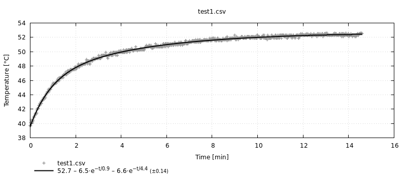

Thermobench.jl
Julia module for working with thermobench-produced CSV files.
Installation
Run julia and type:
Thermobench.jl can be installed using the Julia package manager. From the Julia REPL, type ] to enter the Pkg REPL mode and run:
pkg> develop /path/to/thermobench/juliaAlternatively, if you want to use the same versions of packages as the author of the package, run:
(@v1.4) pkg> activate /path/to/thermobench/julia
(Thermobench) pkg> instantiateUsage
Thermobench package supports plotting with Gnuplot.jl package so you will most likely need both packages:
using Thermobench, GnuplotYou can also create a shortcut T for accessing non-exported members of Thermobench package.
const T = ThermobenchThe simplest way to using the package is the multi_fit function. In the example below, it reads the data from a CSV file and fits a thermal model to it. The result can be directly plotted by Gnuplot.jl:
julia> @gp multi_fit("test.csv")
You can pass multiple CSV files to multi_fit. The result is shown as a DataFrame, which makes it easy to compare the results. You can also specify additional keywords to control the operation. Below we use subtract to subtract ambient temperature from the data to fit, use_measurements to produce results with confidence intervals and use_cmpfit to use alternative fitting solver.
julia> mf = multi_fit(["test.csv", "test2.csv"], subtract=:ambient, use_cmpfit=true, use_measurements=true)
Thermobench.MultiFit: test
2×8 DataFrame. Omitted printing of 2 columns
│ Row │ name │ column │ rmse │ Tinf │ k1 │ tau1 │
│ │ String │ Symbol │ Float64 │ Measureme… │ Measureme… │ Measure… │
├─────┼───────────┼────────────┼──────────┼────────────┼────────────┼──────────┤
│ 1 │ test.csv │ CPU_0_temp │ 0.283474 │ 28.24±0.1 │ -6.57±0.55 │ 55.5±5.7 │
│ 2 │ test2.csv │ CPU_0_temp │ 0.285696 │ 30.65±0.14 │ -8.46±0.58 │ 62.5±5.0 │
julia> @gp mf
In most cases, we are interested only in $T_∞$ parameters. These can be plot (and compared between multiple data sets) with plot_Tinf.
julia> mf2 = multi_fit(["test.csv", "test2.csv"], :CPU_1_temp, name="CPU1", subtract=:ambient, use_cmpfit=true, use_measurements=true)
Thermobench.MultiFit: CPU1
2×8 DataFrame. Omitted printing of 2 columns
│ Row │ name │ column │ rmse │ Tinf │ k1 │ tau1 │
│ │ String │ Symbol │ Float64 │ Measureme… │ Measureme… │ Measure… │
├─────┼───────────┼────────────┼──────────┼────────────┼────────────┼──────────┤
│ 1 │ test.csv │ CPU_1_temp │ 0.286691 │ 29.25±0.12 │ -7.4±0.59 │ 60.5±5.7 │
│ 2 │ test2.csv │ CPU_1_temp │ 0.289158 │ 31.7±0.16 │ -8.62±0.57 │ 63.4±4.9 │
julia> @gp T.plot_Tinf(rename!(mf, "CPU0"), mf2) key="left"
Raw thermobench data
To access raw data from thermobench CSV files, use the Thermobench.read function.
julia> using DataFrames
julia> d = T.read("test.csv");
julia> propertynames(d)
(:df, :name, :meta)
julia> first(d.df, 6)
6×30 DataFrame. Omitted printing of 25 columns
│ Row │ time │ CPU_0_temp │ CPU_1_temp │ GPU_0_temp │ GPU_1_temp │
│ │ Float64 │ Float64? │ Float64? │ Float64? │ Float64? │
├─────┼────────────┼────────────┼────────────┼────────────┼────────────┤
│ 1 │ 5.2376e-5 │ 39.7 │ 40.5 │ 40.5 │ 40.5 │
│ 2 │ 0.00298869 │ 39.7 │ 40.5 │ 40.5 │ 40.5 │
│ 3 │ 0.112669 │ missing │ missing │ missing │ missing │
│ 4 │ 1.00012 │ 40.1 │ 40.7 │ 40.1 │ 40.1 │
│ 5 │ 2.00109 │ 39.7 │ 40.7 │ 39.7 │ 39.7 │
│ 6 │ 2.16951 │ missing │ missing │ missing │ missing │Reference
Thermobench.fit — Methodfit(
time_s::Vector{Float64},
data::Vector{Float64};
order::Int64 = 2,
p0 = nothing,
tau_bounds = [(1, 60*60)],
k_bounds = [(-120, 120)],
T_bounds = (0, 120),
use_cmpfit::Bool = false,
)Fit a thermal model to time series given by time_s and data. The thermal model has the form of
where T_∞, kᵢ and τᵢ are the coefficients found by this function.
If use_cmpfit is true, use CMPFit.jl package rather than LsqFit.jl. LsqFit doesn't work well in constrained fit.
You can limit the values of fitted parameters with *_bounds parameters. Each bound is a tuple of lower and upper limit. T_bounds limits the T∞ parameter. tau_bounds and k_bounds limit the coefficients of exponential functions $k·e^{-t/τ}$. If you specify less tuples than the order of the model, the last limit will be repeated.
Example
d = read("test.csv")
f = fit(d.df.time, d.df.CPU_0_temp)
coef(f)
Thermobench.printfit(f)Thermobench.interpolate! — Methodinterpolate!(df::AbstractDataFrame)In-place version of interpolate.
Thermobench.interpolate — Methodinterpolate!(df::AbstractDataFrame)Replace missing values with results of linear interpolation performed against the first column (time).
julia> x = DataFrame(t=[0.0, 1, 2, 3, 1000, 1001], v=[0.0, missing, missing, missing, 1000.0, missing])
6×2 DataFrame
│ Row │ t │ v │
│ │ Float64 │ Float64? │
├─────┼─────────┼──────────┤
│ 1 │ 0.0 │ 0.0 │
│ 2 │ 1.0 │ missing │
│ 3 │ 2.0 │ missing │
│ 4 │ 3.0 │ missing │
│ 5 │ 1000.0 │ 1000.0 │
│ 6 │ 1001.0 │ missing │
julia> interpolate(x)
6×2 DataFrame
│ Row │ t │ v │
│ │ Float64 │ Float64? │
├─────┼─────────┼──────────┤
│ 1 │ 0.0 │ 0.0 │
│ 2 │ 1.0 │ 1.0 │
│ 3 │ 2.0 │ 2.0 │
│ 4 │ 3.0 │ 3.0 │
│ 5 │ 1000.0 │ 1000.0 │
│ 6 │ 1001.0 │ missing │
Thermobench.multi_fit — Functionmulti_fit(sources, columns = :CPU_0_temp;
name = nothing,
timecol = :time,
use_measurements = false,
order::Int64 = 2,
subtract = nothing,
kwargs...)::MultiFitCall fit() for all sources and report the results (coefficients etc.) in DataFrame. When use_measurements is true, report coefficients with their confidence intervals as Measurement objects.
subtract specifies the column (symbol), which is subtracted from data after interpolating its values with interpolate. This intended for subtraction of ambient temperature.
julia> multi_fit("test.csv", [:CPU_0_temp :CPU_1_temp])
Thermobench.MultiFit: test.csv
2×8 DataFrame
│ Row │ name │ column │ rmse │ Tinf │ k1 │ tau1 │ k2 │ tau2 │
│ │ String │ Symbol │ Float64 │ Float64 │ Float64 │ Float64 │ Float64 │ Float64 │
├─────┼──────────┼────────────┼──────────┼─────────┼──────────┼─────────┼──────────┼─────────┤
│ 1 │ test.csv │ CPU_0_temp │ 0.154483 │ 53.0003 │ -8.1627 │ 59.366 │ -13.1247 │ 317.63 │
│ 2 │ test.csv │ CPU_1_temp │ 0.14436 │ 54.0527 │ -7.17072 │ 51.1449 │ -14.3006 │ 277.687 │Thermobench.plot_Tinf — MethodPlot $T_∞$ as bargraphs.
Thermobench.plot_fit — Functionplot_fit(sources, columns = :CPU_0_temp;
timecol = :time,
kwargs...)Calls fit for all sources and columns and produce a graph using gnuplot.
sources can be a file name (String) or a DataFrame or an array of these.
timecol is the columns with time of measurement.
Setting plotexp to true causes the individual fitted exponentials to be plotted in addition to the compete fitted function.
Other kwargs are passed to fit.
Example
plot_fit(
["file$i.csv" for i in 1:3],
[:CPU_0_temp, :GPU_0_temp],
order = 2
)julia> plot_fit("test.csv", [:CPU_0_temp :CPU_1_temp])
LsqFit.LsqFitResult{Array{Float64,1},Array{Float64,1},Array{Float64,2},Array{Float64,1}}([54.05270193617456, -14.300579425822987, 277.6871572171704, -7.170707187492722, 51.1449427363974], [0.4814153228588438, 0.48210393166134935, -0.02827469472873645, 0.1590733915246858, -0.25639810428151577, -0.2745094012142104, -0.29552833686121005, -0.3190430919820457, 0.054645980053877, -0.1740621999878087 … -0.10112334959897851, -0.09697970488952024, -0.09284269210126439, 0.11127121083011815, 0.11537443369089573, 0.11946698541304812, -0.0764592578095602, -0.07240014726207278, 0.1316443697488907, -0.26432565427360544], [1.0 1.0 … 1.0 -0.0; 1.0 0.9999870640586986 … 0.9999297674088051 -9.84651920490284e-6; … ; 1.0 0.07839196015996269 … 9.920656343511463e-7 -1.9227241374458278e-6; 1.0 0.07811016470837553 … 9.728568932023543e-7 -1.8881625354797446e-6], true, Float64[])Thermobench.printfit — Methodprintfit(fit; minutes = false)Return the fitted function as Gnuplot enhanced string. Time constants (τᵢ) are sorted from smallest to largest.
Thermobench.@symarray — MacroConstruct array of symbols from arguments.
Useful for constructing column names, e.g.,
@symarray Cortex_A57_temp Denver2_tempThermobench.Data — Typemutable struct Data
df::DataFrame
name::String # label for plotting
meta::Dict
endData read from thermobench CSV file.
Thermobench.Data — MethodCopies existing Data d, but uses different DataFrame df.
Thermobench.normalize_units! — MethodNormalizes units to seconds and °C.
Thermobench.read — Methodread(source; normalizeunits=true, stripunits=true, name=nothing, kwargs...)::DataReads thermobech CSV file source, which can be a file name or an IO stream. Returns Thermobench.Data type, which embeds a data frame. By default units are normalized with normalize_units! and stripped from column names. name and kwargs are stored in result as metadata. If name is not specified it is set (if possible) to the basename of the CSV file.
Thermobench.strip_units! — MethodStrips unit names from column names.
Thermobench.thermocam_correct! — Methodthermocam_correct!(d::Data)Estimate correction for thermocamera temperatures and apply it. Return the correction coefficients.
Correction is calculated from CPU_0_temp and cam_cpu columns. This and the names of modified columns are currently hard coded.